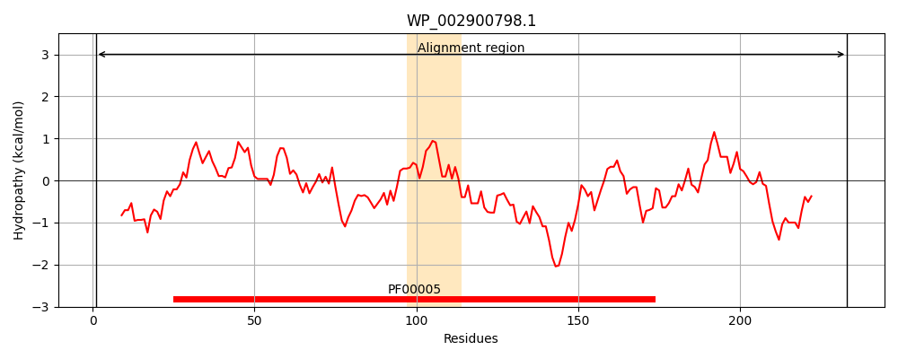
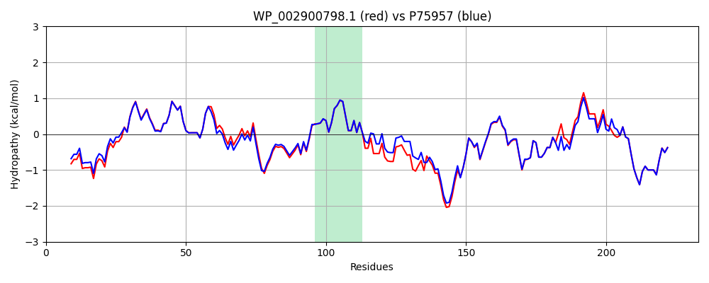

Hit Accession: P75957
Hit TCID: 3.A.1.125.1
Hit Description: gnl|BL_ORD_ID|11426 gnl|TC-DB|P75957|3.A.1.125.1 Lipoprotein releasing system ATP-binding protein lolD - Escherichia coli.
Mach Len: 233
e:0.000000
Query TMS Count : 1
Hit TMS Count: 1
TMS-Overlap Score: 0.900000
Predicted Substrates:CHEBI:6495;lipoprotein
BLAST Alignment:
Score: 1059 , Bit scores: 412 bits, E-value: 1.9e-148, Alignment length: 233, Percentage identity: 89
Query: 1 MNKILLQCDNLCKRYQEGNVQTDVLHNVSFSIGEGEMMAIVGTSGSGKSTLLHLLGGLDTPTSGDVIFSGQPMSKLSTAARADLRNRELGFIYQFHHLLPDFSALENVAMPLLIGKKKPADIERQAKAMLQAVGLEHRSHHRPSELSGGERQRVAIARALVNKPRLVLADEPTGNLDARNADSIFQLLGELNVAQRTAFLVVTHDLQLAKRMSRQLEMRDGRLTADLTLMGAE 233
MNKILLQCDNLCKRYQEG+VQTDVLHNVSFS+GEGEMMAIVG+SGSGKSTLLHLLGGLDTPTSGDVIF+GQPMSKLS+AA+A+LRN++LGFIYQFHHLLPDF+ALENVAMPLLIGKKKPA+I +A ML+AVGL+HR++HRPSELSGGERQRVAIARALVN PRLVLADEPTGNLDARNADSIFQLLGELN Q TAFLVVTHDLQLAKRMSRQLEMRDGRLTA+L+LMGAE
Sbjct: 1 MNKILLQCDNLCKRYQEGSVQTDVLHNVSFSVGEGEMMAIVGSSGSGKSTLLHLLGGLDTPTSGDVIFNGQPMSKLSSAAKAELRNQKLGFIYQFHHLLPDFTALENVAMPLLIGKKKPAEINSRALEMLKAVGLDHRANHRPSELSGGERQRVAIARALVNNPRLVLADEPTGNLDARNADSIFQLLGELNRLQGTAFLVVTHDLQLAKRMSRQLEMRDGRLTAELSLMGAE 233 | Protein Hydropathy Plots: |
|---|
|  |  |
Pairwise Alignment-Hydropathy Plot:
|
|---|
|  |